Google Analytics
Set Up Google Analytics
Follow these steps to enable traffic tracking for your OTTR course or website.
1. Create a Google Analytics account (if you do not already have one): https://analytics.google.com/analytics
Click on Start measuring.
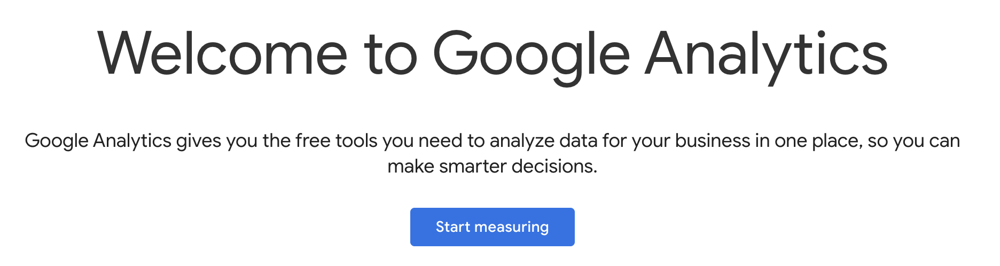
You will need to agree to Google’s terms during account creation. Tracking is currently free as long as your course does not exceed a very high user rate.
2. Create a new Property — fill in a name and details, and select the options that reflect how you intend to use Google Analytics.
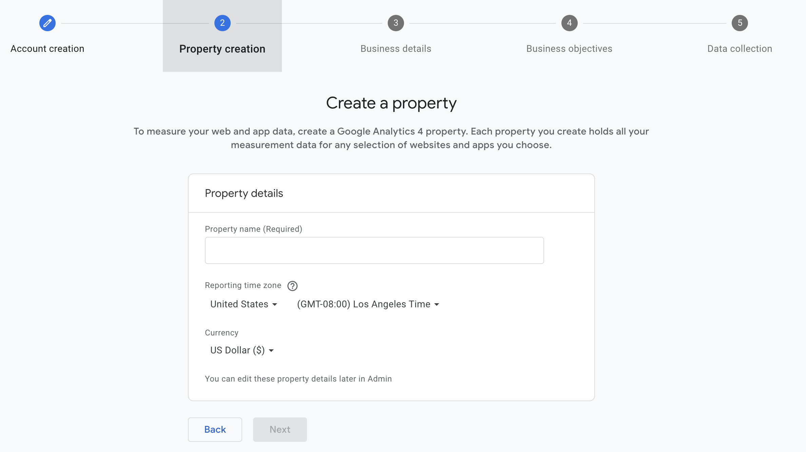
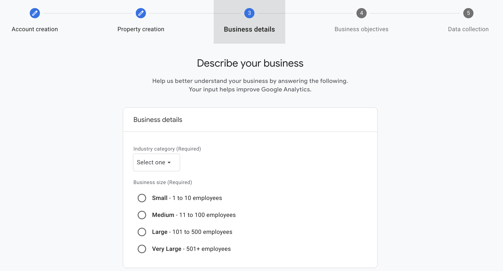
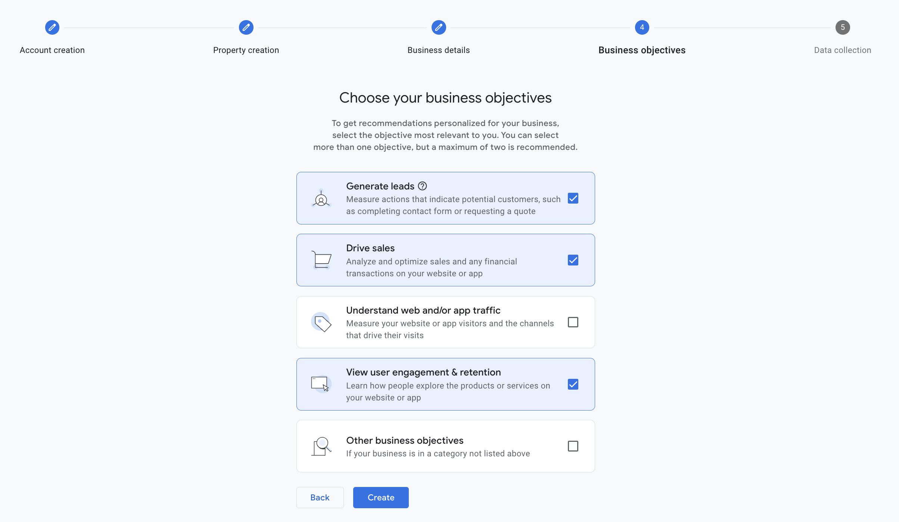
3. Accept Terms
To use Google Analytics you must first accept the terms of service agreement for your country / region.
4. Add a Data Stream to your property — choose the Web option.
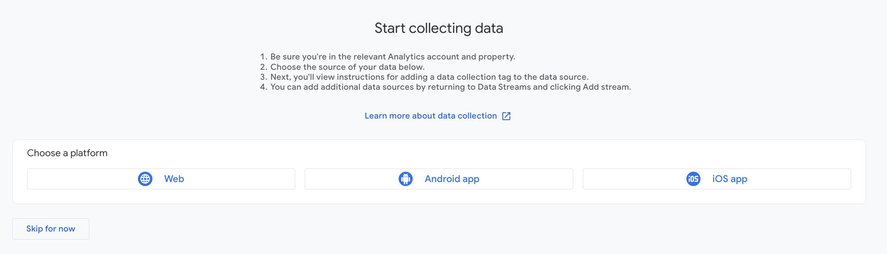
5. Enter the URL for your course. Note: the https:// portion is selected from a dropdown to the left of the URL field — do not include it in the text box. Click on Create and continue.
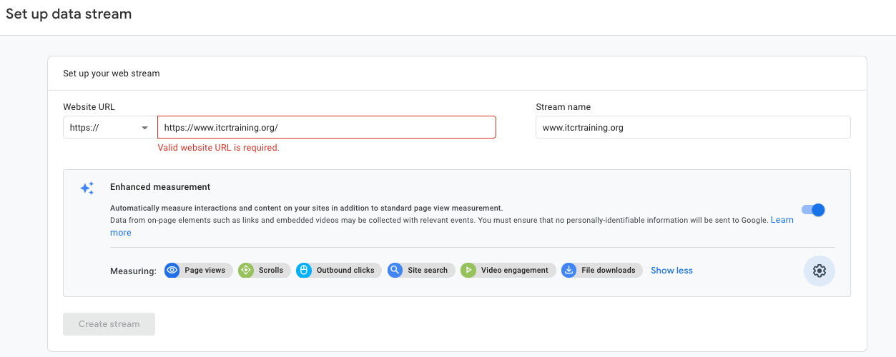
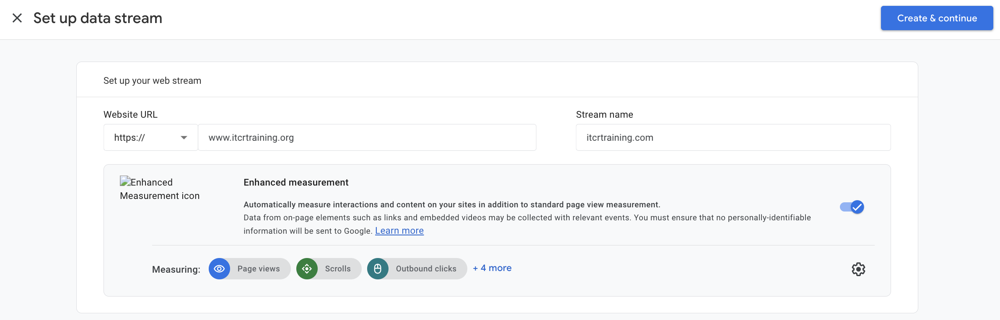
6. Copy the code chunk provided on the resulting page. It will look like this (with your unique ID in place of G-XXXXXXXXXX):
<!-- Google tag (gtag.js) -->
<script async src="https://www.googletagmanager.com/gtag/js?id=G-XXXXXXXXXX"></script>
<script>
window.dataLayer = window.dataLayer || [];
function gtag(){dataLayer.push(arguments);}
gtag('js', new Date());
gtag('config', 'G-XXXXXXXXXX');
</script>Configure Your OTTR Repo
For R Markdown Courses
Update GA_Script.html — replace the entire contents of the file with the code chunk you copied from Google Analytics:
<!-- Google tag (gtag.js) -->
<script async src="https://www.googletagmanager.com/gtag/js?id=G-XXXXXXXXXX"></script>
<script>
window.dataLayer = window.dataLayer || [];
function gtag(){dataLayer.push(arguments);}
gtag('js', new Date());
gtag('config', 'G-XXXXXXXXXX');
</script>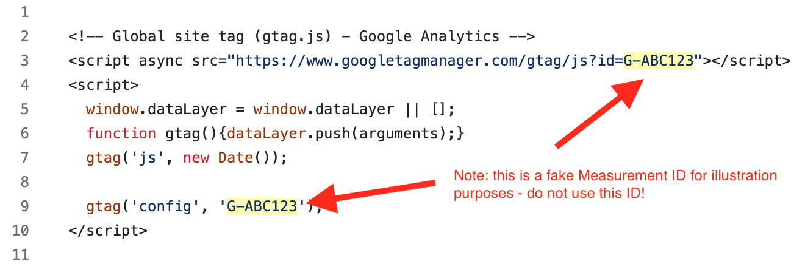
_output.yml is already configured in the updated OTTR template — no manual changes needed. It should include:
includes:
in_header: GA_Script.html
before body: ...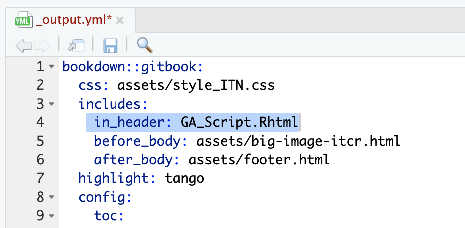
For Quarto Courses
Update GA_Script.html — replace the entire contents of the file with the code chunk you copied from Google Analytics (same as for R Markdown courses).
The GA_Script.html file is included via include-in-header in _quarto.yml:
format:
html:
include-in-header: GA_Script.htmlThe updated template handles this — you only need to paste in your copied code chunk.
Trigger a Re-render
After updating GA_Script.html, the GitHub Action will automatically re-render your course because the updated OTTR template watches for changes to GA_Script.html:
# In .github/workflows/render-all.yml
on:
push:
paths:
- '*.Rmd'
- 'assets/*'
- '*.yml'
- 'GA_Script.html' # <-- triggers render on GA changesYou can verify the Google Analytics code was included by opening any rendered HTML file in docs/ and searching for Google Analytics.
Note: If you are working with an older template, you may need to manually trigger the
render_allworkflow. Make sure both_output.ymlandGA_Script.htmlare updated with matching file names and the correct code chunk. Occasionally this also requires setting up aGH_PATfor the repo (withactionsandrepopermissions) — not just the organization.
Verify Traffic Is Being Tracked
Log in to Google Analytics.
Click the gear icon (lower left) → Data Collection and Modification → Data Streams.
Click on your stream — it will indicate whether traffic has been received.
To test, click Test on the stream page. Even if the test passes, also open your live course URL and check Google Analytics to confirm you appear as a visitor.
Click the Home button in Google Analytics — it should say “Data collection is active”.
Check the Reports tab (bar chart icon, upper left). If you open your course in a browser, you should see yourself counted as 1 user in the last 30 minutes.
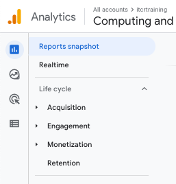
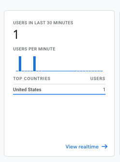
Troubleshooting
| Issue | What to Check |
|---|---|
| No data showing in GA | Make sure the code chunk in GA_Script.html was copied correctly from Google Analytics and contains the right ID (G-XXXXXXXXXX) |
| Data stream shows no traffic | Check that the URL in the stream matches your course URL — watch for https vs http |
| Old template not rendering GA | Manually run the render_all workflow; confirm both _output.yml and GA_Script.html are updated with the correct code chunk, and that the GA_Script.html filename is consistent in both files |
| Render not triggering | Ensure GH_PAT is set up for the repo (with actions and repo permissions), not just the organization |
← Back to: Next Steps · Having issues? Troubleshooting